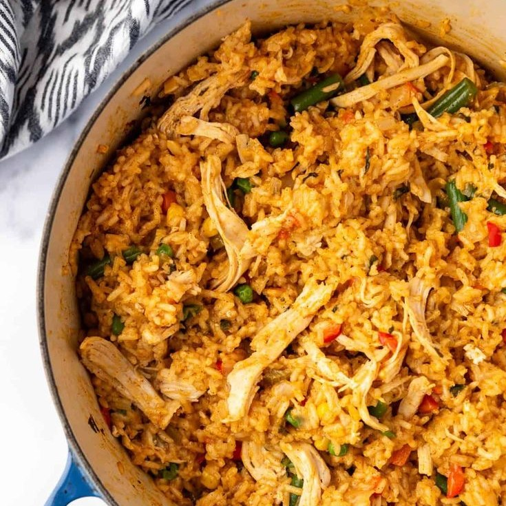

.png)

Almuerzo
Arroz con pollo
- Tiempo1 h 20 min
- Rinde4 porciones
- DificultadMedia
Ingredientes
Caldo y pollo
- 2 pechugas de pollo con hueso, sin piel
- 5 tazas de agua
- 2 cebollas largas
- ½ cebolla blanca
- 3 dientes de ajo
- ½ cucharada de comino molido
- ½ cucharada de sazón con azafrán (o un condimento amarillo similar)
- 1 hoja de laurel
- Sal y pimienta
Arroz
- 2 cucharadas de aceite de oliva
- ¼ de taza de cebolla picada
- 1 diente de ajo picado
- ¼ de taza de pimentón rojo picado
- ¼ de taza de pimentón verde picado
- 1 taza de arroz blanco de grano largo
- 1 cucharada de pasta de tomate
- 1 pastilla de caldo de pollo
- 2½ tazas del caldo colado
- ½ cucharada de sazón con azafrán
- ¼ de taza de cilantro picado
- ½ taza de arvejas congeladas
- ½ taza de zanahoria en cubitos congelada
- ½ taza de habichuelas en cubitos congeladas
Preparación
- Caldo: en una olla pon las pechugas, el agua, la cebolla larga, la cebolla blanca, el ajo, el comino, la sazón, el laurel, sal y pimienta. Lleva a hervor, tapa y cocina a fuego medio-bajo de 20 a 25 minutos.
- Apaga, deja el pollo tapado unos 15 minutos y luego desmécalo. Cuela el caldo y mide 2½ tazas.
- En otra olla calienta el aceite a fuego medio-alto y sofríe la cebolla, los pimentones y el ajo de 4 a 5 minutos, hasta que la cebolla esté transparente.
- Agrega el arroz, la pasta de tomate, la pastilla de caldo y la sazón; revuelve unos 3 minutos para que el arroz se cubra bien.
- Añade las 2½ tazas de caldo y lleva a hervor. Baja el fuego al mínimo, tapa y cocina unos 15 minutos.
- Incorpora las arvejas, la zanahoria y las habichuelas y cocina 7 minutos más.
- Agrega el pollo desmechado y el cilantro, mezcla con un tenedor, tapa y cocina 5 minutos más.
Consejos
- La pechuga con hueso da más sabor al caldo; también sirve sin hueso.
- Si no te gusta el cilantro, usa perejil.
- Se conserva en la nevera hasta 3 días y recalienta bien.
- Sírvelo con limón, aguacate o una ensalada verde.
Receta adaptada de My Colombian Recipes. Texto reescrito y cantidades tomadas de la fuente.